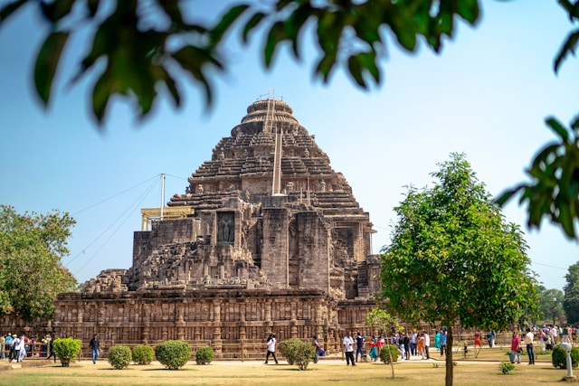
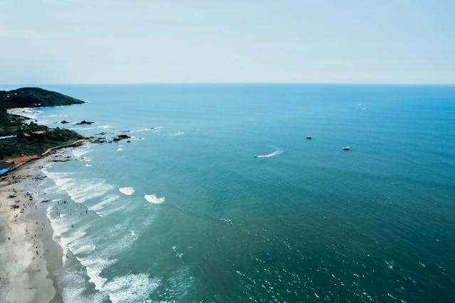
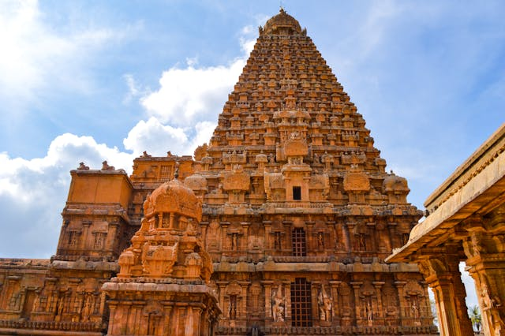
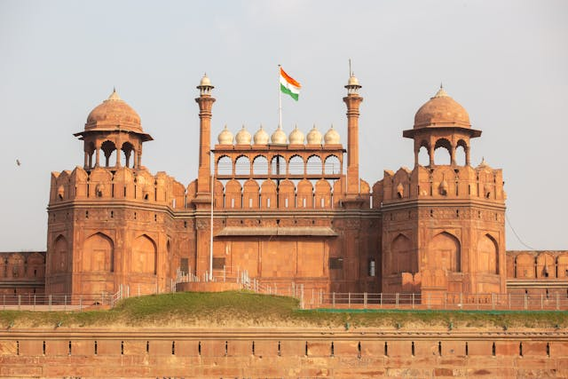
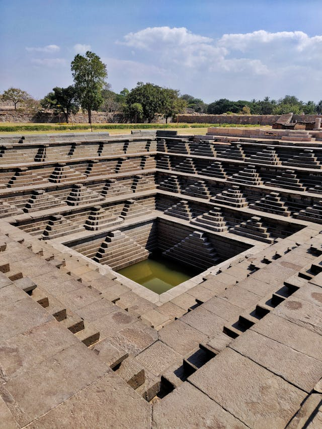
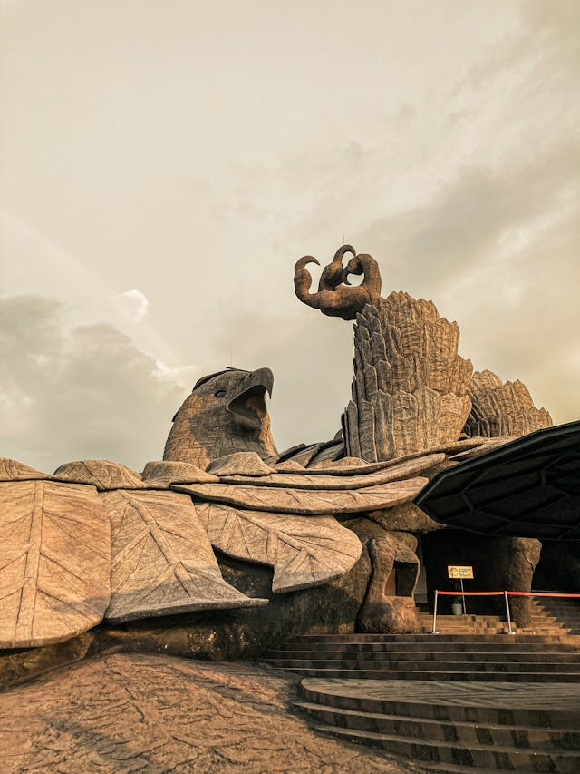
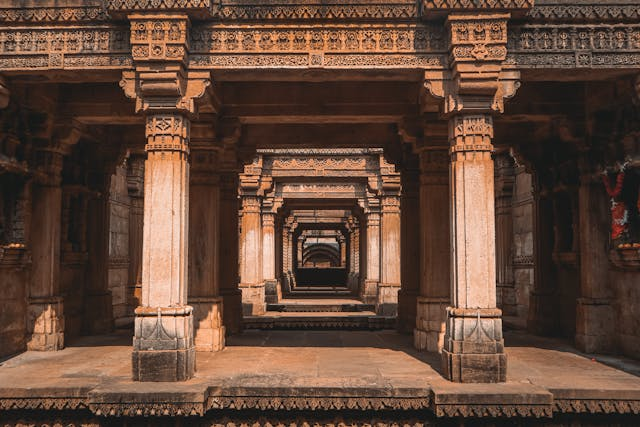

India Gate
Delhi

Humayu's Tomb
Delhi

Mysore Palace
Mysore, Karnataka

Taj Mahal
Agra, Delhi

Chatrapati Shivaji Maharaj Terminus
Mumbai, Maharashtra

Ganga Aarti
Varanasi, Uttar Pradesh

Lotus Temple
Delhi

Gateway of India
Delhi

Palace of Wind
Jaipur, Rajasthan

Jak Mahal
Jaipur, Rajasthan

Amer Fort
Jaipur, Rajasthan

Ajanta Caves
Aurangabad, Maharashtra

Raigad Fort
Raigad, Maharashtra

Golden Temple
Amritsar, Punjab

Charminar
Hyderabad, Telangana

Konark Sun Temple
Konark, Odisha

Goa Beach
Goa

Chola Temple
Thanjavar, Tamil Nadu

Red Fort
Delhi

Stepped Tank
Hampi, Karnataka

Jatayu Statue
Kollam, Kerala

Adalaj Stepwell
Gujarat
×